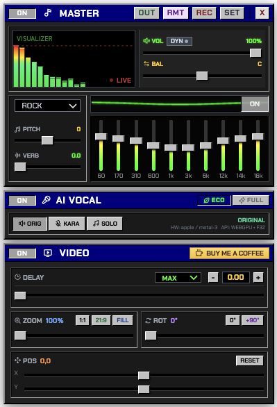

01AI VOCAL CONTROL
AI vocal
modes.
Enable Karaoke or Acapella when you need vocal separation. ECO and FULL profiles are available for different devices.
VOCAL / INSTRUMENTAL
Adjust pitch, AI vocal modes, video sync and recording from a browser extension.
AI vocal processing loads only when enabled.

Use the controls you need to adjust audio, video and recordings in your browser.
Enable Karaoke or Acapella when you need vocal separation. ECO and FULL profiles are available for different devices.
Change pitch, adjust reverb and manage levels with simple controls.
Adjust delay, zoom, rotation and quality for the current media tab.
Control an active session from another device, or record a take locally for playback, download and delete.
NextStudio uses the browser capabilities available on your device. AI is optional, and lighter processing is available when a machine has less headroom.
Read the privacy policyOpen a supported media tab, select a feature and continue working. AI stays off until you enable a vocal mode.
Open your music or video in a supported browser tab.
Adjust pitch, vocal mode, effects and video timing.
Keep the session simple, then save the take locally if you want it.
Only after you turn on an AI vocal mode. The public page never preloads the model.
Remote sends validated control values such as volume, pitch, vocal mode and video timing. It does not carry the audio stream.
Recordings and preferences are designed to stay in the local browser or Extension storage. You can play, download or delete your own takes.
No. Browser acceleration depends on the browser, driver, operating system and available hardware. NextStudio exposes lighter options for constrained devices.